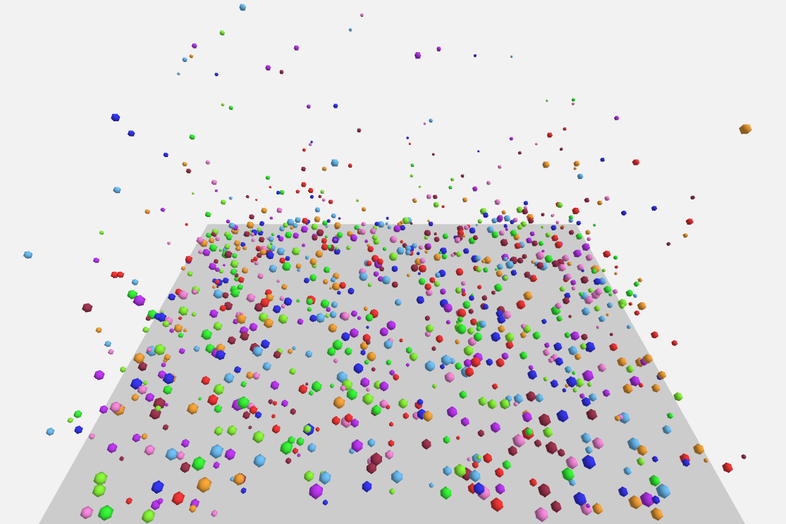

OpenGJK-GPU
CUDA implementation of GJK + EPA collision detection with warp-parallel execution and major speedups over CPU baselines.

Here’s a collection of projects I’ve built—selected work across graphics, systems, and ML. Click a tile to open the project page.
CUDA implementation of GJK + EPA collision detection with warp-parallel execution and major speedups over CPU baselines.
Physically-based path tracer with acceleration structures, stream compaction, and support for textured glTF meshes.
Distributed crawl → index → rank pipeline with performance-focused query serving and robust web data handling.
Procedural wing generator with feather systems and texture-driven species variation.

Real-time WebGPU renderer for neural point clouds (3D Gaussian Splatting) with culling, sorting, and fast frame times.
Multiple lighting pipelines (Naive / Forward+ / Clustered Deferred) optimized for scenes with thousands of point lights.
Reynolds Boids at scale with spatial hashing / uniform grid optimization for massive speedups and high FPS.
Implemented scan variants and built stream compaction + radix sort primitives with profiling-driven optimization.

Chunk-based voxel engine with multithreaded procedural generation, shader effects, and tooling for voxelization/editing.
LLM-powered agent simulation with action schemas, robust state management, and real-time visualization tools.

Speed/accuracy optimization experiments plus distributed NanoGPT work and rigorous statistical benchmarking.
Toon shader + rim lighting and post-process outlines (depth/normals) with interactive effects.
FAT-style file system, modular abstractions, and subsystem integration with careful concurrency debugging.
Full-stack music analytics app with dataset integration, feature visualization, and recommendation-oriented exploration.